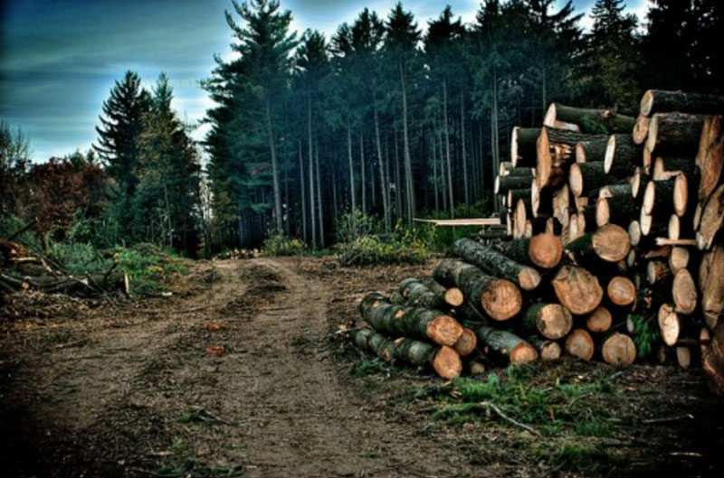
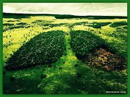
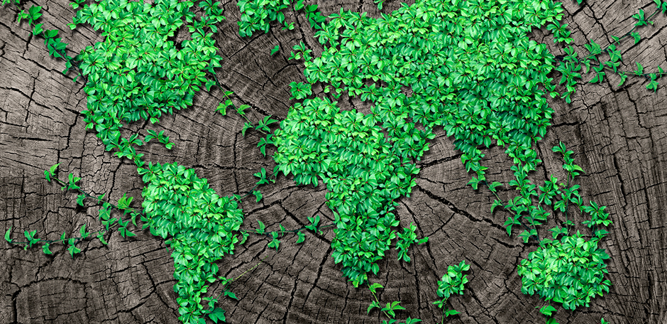

Sabias qué:
Los bosques son necesarios, los animales son necesarios, todo en este mundo es necesario. Pensemos de forma egoísta, si quieren, pensemos sólo en nosotros los humanos. ¿Necesitamos los bosques? Sí. Sin ellos no hay control para el calentamiento global, sin ellos no hay biodiversidad, que ya vimos aquí muchas veces lo importante que es para nosotros que siga existiendo la biodiversidad.


La deforestación provoca una gran disminución en el número de árboles, lo que a su vez provoca una mayor dificultad para absorber el dióxido de carbono del planeta. Son los árboles y las plantas los encargados de ejercer de pulmones del planeta y absorber dicho dióxido de carbono y convertirlo en oxígeno.
Global Witness auguran que las consecuencias serán graves, no solo para Perú, sino para el resto del mundo. "Con el papel de los bosques para detener el cambio climático, lo que no podemos ver es cómo la Amazonía, el bosque más importante del planeta, se destruya a este nivel"

La directora de la campaña de Perú sobre la erradicación de la tala ilegal de árboles considera que se trata de un "problema sistémico", ya que "si el sistema funcionara, el gobierno iría a verificar" lo que los documentos indican, pero en muchas ocasiones, y según sus datos, eso no sucede.